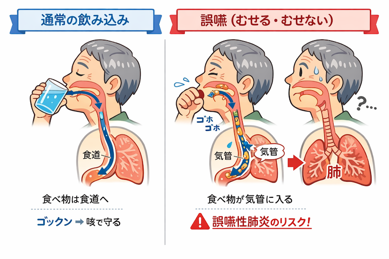

公開日：2026年5月｜最終更新：2026年5月
肺炎というと、「風邪や感染から起こるもの」というイメージがあります。 しかし高齢者では、食事や唾液が原因となる肺炎が多く見られます。
それが「誤嚥性肺炎」です。その原因と予防について考えます。
誤嚥性肺炎とは、食べ物や唾液、胃の内容物などが気道に入り、 細菌とともに肺に流れ込むことで起こる肺炎です。
通常は、気道に異物が入ると「むせる」「咳が出る」ことで排出されます。
しかし高齢者では、この防御機能が低下していることがあります。
| 項目 | 一般的な肺炎 | 誤嚥性肺炎 |
|---|---|---|
| 原因 | 細菌・ウイルス | 誤嚥 |
| 予防 | マスク・手洗い | 食事・姿勢・口腔ケア |
| 発症 | 急性 | 繰り返すことが多い |
これらが重なることで、誤嚥が起こりやすくなります。

特に注意が必要なのが、「むせない誤嚥（不顕性誤嚥）」です。
本来であれば、異物が入ると咳が出て気づきますが、 高齢者では咳反射が弱くなるため、気づかないまま誤嚥してしまうことがあります。
このため、 「むせていないから大丈夫」とは言えません。
風邪のように見えるため、見逃されやすいのが特徴です。
口の中を清潔に保つことが、肺炎予防につながります。
誤嚥性肺炎は、感染だけでなく日常生活の中で起こる肺炎です。
特に高齢者では、 「むせない誤嚥」や「咳が弱い」ことが大きな特徴です。
誤嚥性肺炎は“防げる肺炎”です。
日々の食事・姿勢・口腔ケアが予防につながります。
しかし高齢になると、この咳の力（咳反射）が弱くなることがあります。
※本ページは公的機関および学会の情報をもとに作成しています。